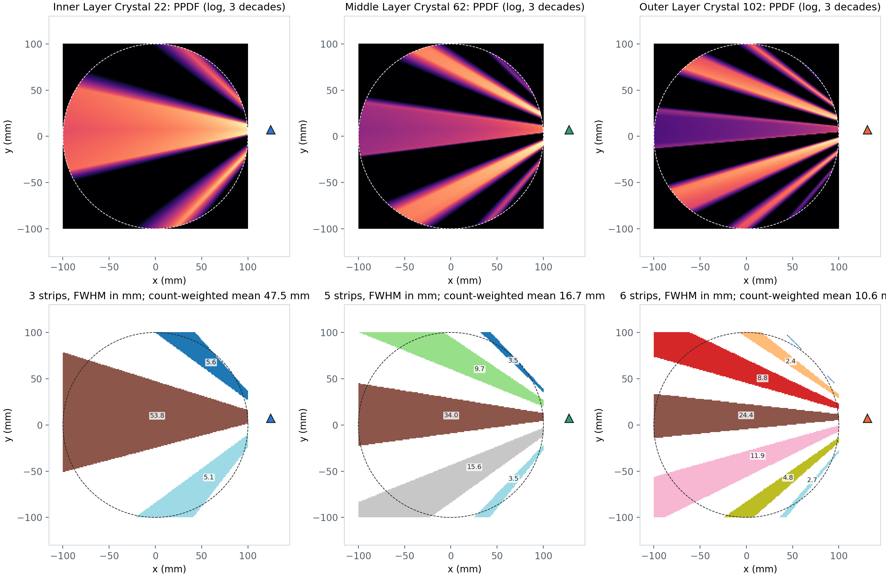
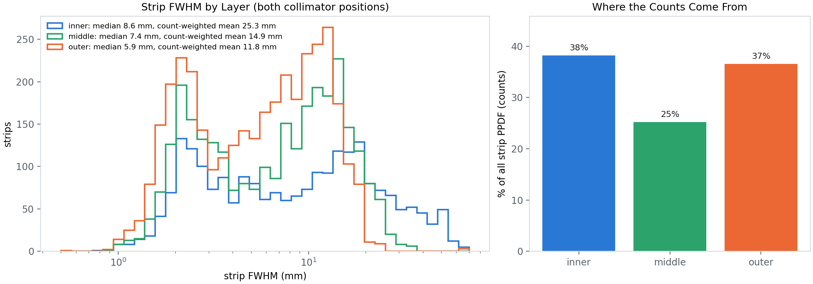

Brain Template Design Maps
The wFWHM, ASCI, sensitivity and PPDS maps of MIC slides 13 to 15, computed on the brain self-collimating SPECT (SC-SPECT) template that Tridev built, with the new design-maps code (spebt/pymatana PR #5).
- PPDF
- a crystal's detection probability for a photon emitted at each pixel
- Strip
- the part of a crystal's PPDF seen through one aperture, above 1% of the crystal's peak; its FWHM is measured across it at its PPDF-weighted centre
- wFWHM
- at each pixel, the mean FWHM of the strips covering it, each weighted by its whole PPDF (its counts)
- ASCI
- angular sampling completeness index: the share of 1° strip-angle bins covered at a pixel, by strips above 1% of the brightest strip's mean PPDF
- PPDS
- projection probability density sensitivity: over the crystals whose strips cover a pixel, the sum of each crystal's total PPDF divided by its strip area in pixels
Maps Inside the 200 mm FOV
The square PPDF grid reaches 141 mm in its corners, past the collimator at 120 mm. All pixels outside the FOV circle were set to 0 before the strip extraction (second finding), and the maps are shown and averaged inside the 200 mm FOV.

| Map | Mean | Range | Reading |
|---|---|---|---|
| wFWHM | 23.4 mm | 20.3 to 26.5 mm | strips weighted by their counts |
| ASCI, all strips | 74.1% | 47.2 to 85.6% | both positions combined; one position: 57% |
| ASCI, strips ≤ 10 mm | 36.7% | 12.5 to 56.4% | lowest at the centre; one position: 24% |
| Sensitivity | 0.375 | 0.19 to 0.55 | in-plane detection probability |
| PPDS | 0.89 | 0.57 to 1.00 | per pixel, as on slide 15 (here 1 mm pixels) |
Findings
wFWHM is 23 mm because wide strips carry most counts and cover the most pixels
The median strip is 6.8 mm wide, but the strips wider than 10 mm, 36% of them, carry 79% of the counts. Weighted by counts, the mean strip is 17.7 mm wide: 25.3 mm in the inner layer (38% of the counts), 14.9 mm in the middle (25%) and 11.8 mm in the outer (37%). The map's mean is higher, 23.4 mm, because a wide strip also covers more pixels; each layer's strips alone give maps of 32, 16 and 13 mm. A crystal's central strip, aimed at the FOV centre, has a median FWHM of 30, 16 and 13 mm by layer; the Figure 2 crystals face the centre and are among the widest (54, 34 and 24 mm).
The pixels outside the FOV must be zeroed before the strip extraction
The 8,572 pixels outside the FOV circle hold 17% of the PPDF, and the 1,592 beyond the collimator (6.4% of it) see the crystals with nothing in between. Left in, the brightest strip came from a corner, 140 mm from the centre: a 3-pixel sliver 30 to 35 times brighter than the brightest strip centred inside the FOV. ASCI counts strips above 1% of the brightest, so two thirds of the strips centred inside the FOV (88% of those up to 10 mm) dropped out: ASCI was 50% instead of 74% with all strips, and 10% instead of 37% for strips up to 10 mm. With the floor set by the strips inside the FOV, the same strips give 76% and 38.5%, so the floor accounts for the drop. Zeroing raised wFWHM by 1.2% (23.1 to 23.4 mm), lowered PPDS by 0.8% (0.894 to 0.887) and left sensitivity inside the FOV unchanged. The MIC maps are not affected: their 10 mm grid lies well inside that system's collimator, 34 mm in radius.
ASCI depends on the strip-width window
With every strip, ASCI is 74% on average. With strips up to 10 mm it is 37%, lowest at the centre: the strips through the centre are wider (median 16 mm, 8% of them within 10 mm) than those crossing 70 mm out (12 mm, 38%), though both are measured about as far from their apertures. The window here, 10 mm, is about the same share of the FOV as the 0.45 mm of the MIC maps; it should follow the brain resolution target.
Sensitivity and PPDS are in-plane values
Sensitivity is 0.375 on average and 0.55 at the centre: the probability that a photon emitted in the plane is detected, per collimator position. PPDS is 0.89 per pixel.
64 mm strips are failed measurements
pymatana records the full 64 mm length of its sampling line when that line misses the strip's PPDF entirely. On a 300 mm line these strips stay unresolved too, so they are not wide strips cut short. With the corners zeroed, 8 of the 8,670 strips have that value.


Checks
| Check | Result | |
|---|---|---|
| MIC slides 13 to 15 | the PR code reproduces the benchmark and MOBO-optimized maps: ASCI and sensitivity identical, wFWHM within 1.3e-14, PPDS within 2e-8 (relative) | pass |
| Brain maps, independent code | code written from the definitions, without the PR's code, gives the same four maps for both runs, with the corners left in and zeroed; inside the FOV the means agree to six digits | pass |
| Strip files against the PPDFs | every strip's pixel count matches its mask; its sensitivity is the mean PPDF of its pixels (within 2.4e-7); its weighted centre agrees within 2.3e-5 mm with x on the first pixel index; property rows without PPDF or angle are skipped | pass |
| Pixel convention | with x and y swapped, PPDS would be 1.40 instead of 0.89, so the convention matters; the stored strip centres confirm x on the first index | pass |
| Corners zeroed | strip extraction and maps rerun with the PPDF set to 0 outside the FOV: the results in this report (second finding) | used |
| Sampling line | pymatana's own functions on a 64 mm line reproduce every stored FWHM; on a 300 mm line the 8 strips at 64 mm stay unresolved, the others change by at most 0.05 mm and the map means by at most 0.2% (PPDS); with the corners left in, 114 strips, 0.7 mm and 2.3% | pass |
| README, fresh clone | three steps were missing (the PPDF file names the extraction reads, every layout, reruns); with them the maps come out identical; the README update adds them, with the zeroing step | fixed |
Recommendations for the Template Report
- Set the PPDF to 0 outside the 200 mm FOV before the strip extraction, and show and average the maps inside the FOV circle.
- State the ASCI window and that ASCI combines both collimator positions: strips up to 10 mm here, and all strips for comparison.
- Give wFWHM with the strip widths behind it, the count-weighted means by layer or the strip-width histogram, since the wide strips dominate it.
- Leave 64 mm strip widths out of width statistics: they are failed measurements, 0.1% of the strips once the corners are zeroed, and keeping them in the maps moves PPDS by 0.2%.
- Values are 2-D; sensitivity and PPDS per collimator position; PPDS per pixel.
Reproduce
Code: branch design-maps of github.com/Syedomershah99/pymatana (pull request github.com/spebt/pymatana/pull/5). Run folder on CCR: /projects/academic/rutaoyao/Omer/brain_maps_check/tests_31oct/corners. Its data folder holds Tridev's stacked PPDFs (/vscratch/grp-rutaoyao/Tridev/brain_spect/data, brain_spect_ppdfs_layout000_all.hdf5 and layout001_all.hdf5) set to 0 outside the FOV, as position_000_ppdfs.hdf5 and position_001_ppdfs.hdf5. Its corners.yml: paths.scanner_layouts_dir /vscratch/grp-rutaoyao/Tridev/brain_spect/geometry, scanner_layouts_filename brain_spect_layouts_e90446e80e2b0ae1da75fd55d98c8d37_rot2_ang1p0deg_trans1x1_step0p0x0p0.tensor, data_output_dir the data folder, fov.n_pixels [200, 200], fov.mm_per_pixel [1.0, 1.0], analysis.fwhm_max_mm 10; corners_nofilter.yml is the same with analysis.fwhm_max_mm 1e9 (ASCI with all strips). Under a minute for both positions.
cd beam-analysis for L in 0 1; do python arg_extract_beam_masks.py $L --config corners.yml; python arg_extract_beam_properties.py $L --config corners.yml; done python arg_design_maps.py --config corners.yml --layouts 0 1 --out brain_maps.hdf5 python arg_design_maps.py --config corners_nofilter.yml --layouts 0 1 --out brain_maps_allstrips.hdf5